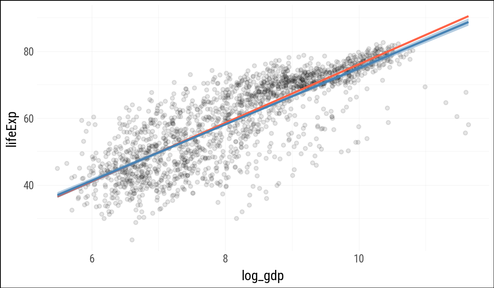
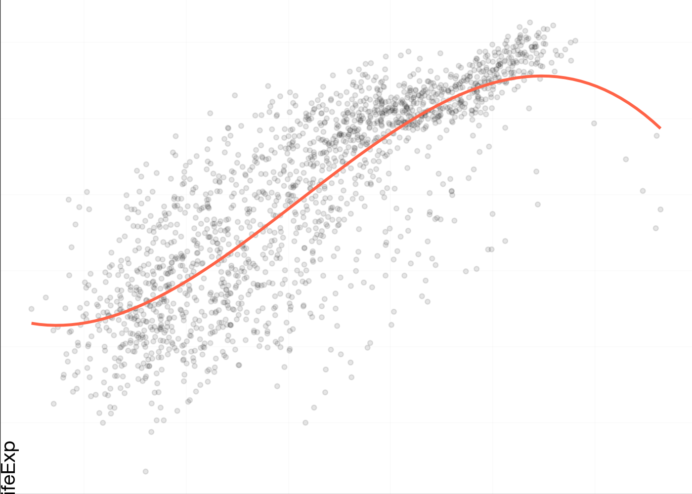
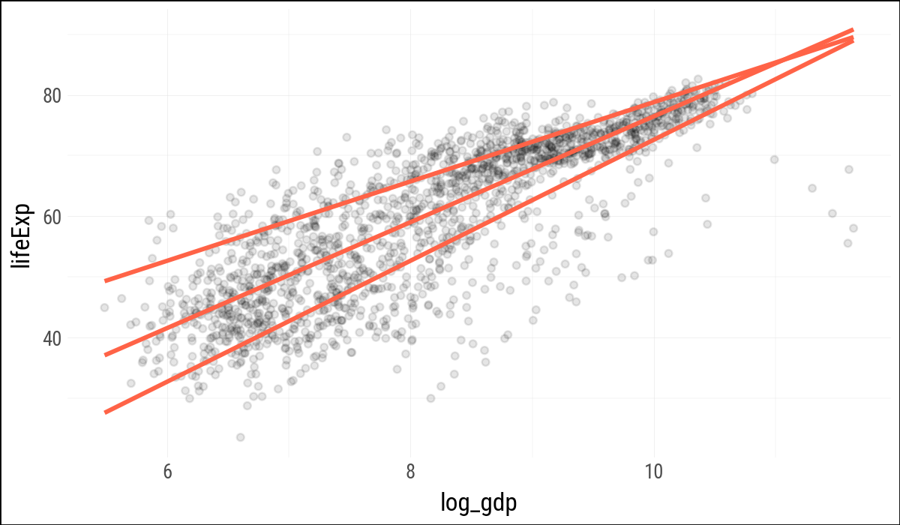
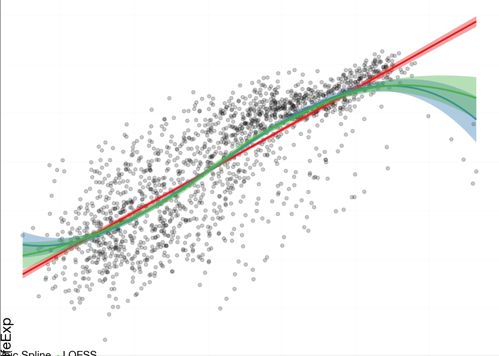
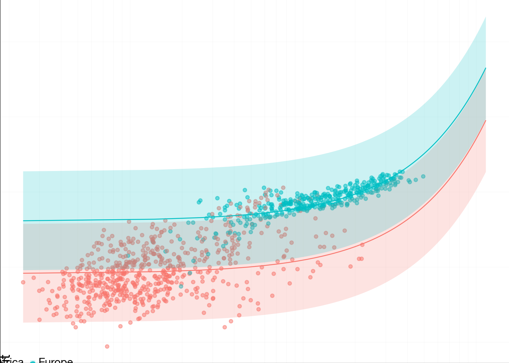
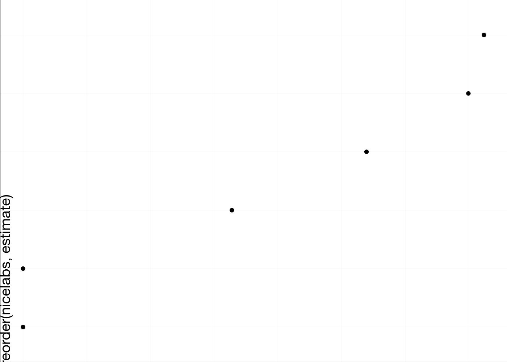
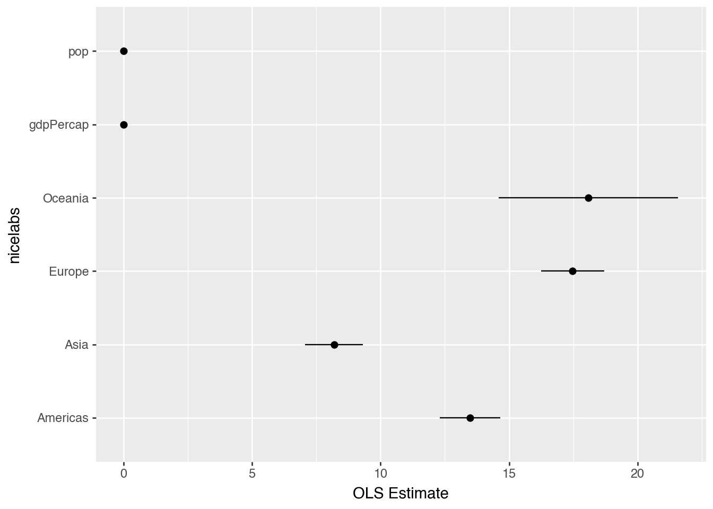
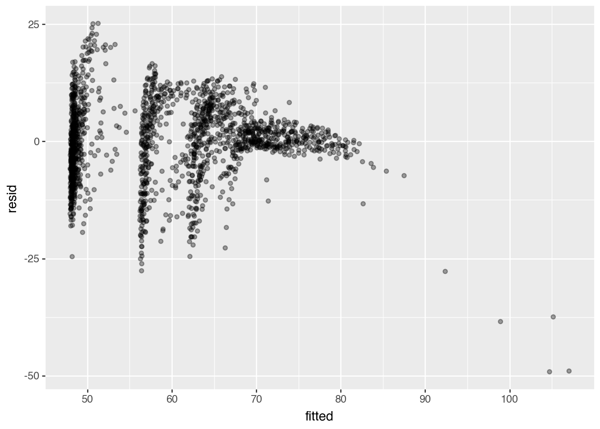
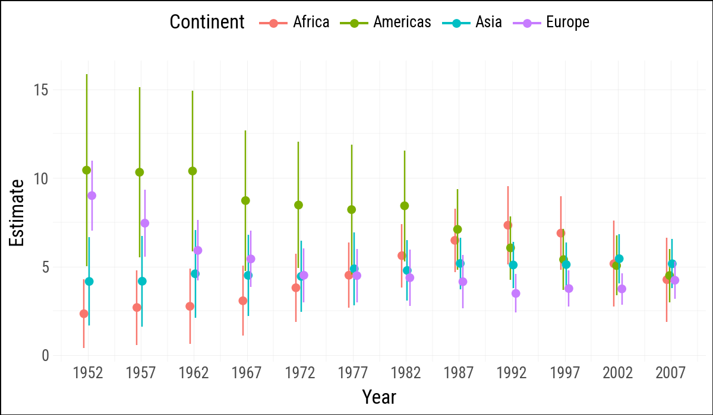
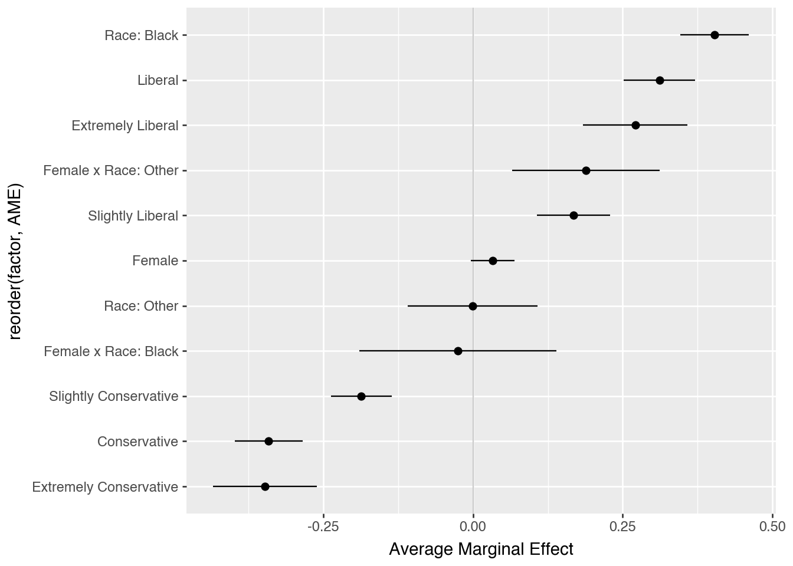

import numpy as np
import pandas as pd
import polars as pl
import statsmodels.formula.api as smf
from mizani.formatters import currency_format
import plotnine_polars as p9
from plotnine_polars import aes, position_dodge
from socviz_pl import load_data, theme_socviz
p9.theme_set(theme_socviz())6 Work with Models
This chapter follows Chapter 6 of Healy (2026), translating the main model-based graphics to Python, Polars, statsmodels, and plotnine_polars. The goal is not to teach statistical modeling, but to show how model objects can be turned into tidy tables that we can graph.
gapminder = pl.read_csv(
"https://raw.githubusercontent.com/jennybc/"
"gapminder/main/inst/extdata/gapminder.tsv",
separator="\t"
)
gapminder_pd = gapminder.to_pandas()
gss_sm = load_data("gss_sm")6.1 Show Several Fits at Once
Plotnine can fit several smoothers directly inside a plot, much as ggplot does. For the robust regression smoother, plotnine currently warns that confidence intervals are not implemented, so these examples suppress the interval for that layer.
p = (
gapminder
.with_columns(log_gdp=pl.col("gdpPercap").log())
.ggplot(aes(x="log_gdp", y="lifeExp"))
)(
p
.geom_point(alpha=0.1)
.geom_smooth(color="tomato", fill="tomato",
method="rlm", se=False)
.geom_smooth(color="steelblue", fill="steelblue",
method="lm")
)
(
p
.geom_point(alpha=0.1)
.geom_smooth(
color="tomato",
method="lm",
formula="y ~ bs(x, df=3)",
se=False,
size=1.2
)
)
(
p
.geom_point(alpha=0.1)
.geom_quantile(
color="tomato",
size=1.2,
quantiles=[0.20, 0.50, 0.85]
)
)
When separate smoother layers map color and fill to literal labels, plotnine can build a legend for the model types. As in R, this is a useful trick: the labels are not variables in the data, but one-value aesthetic mappings created for each layer.
model_colors = ["#E41A1C", "#377EB8", "#4DAF4A"](
p
.geom_point(alpha=0.2)
.geom_smooth(
aes(color='"OLS"', fill='"OLS"'),
method="lm"
)
.geom_smooth(
aes(color='"Cubic Spline"',
fill='"Cubic Spline"'),
method="lm",
formula="y ~ bs(x, df=3)"
)
.geom_smooth(
aes(color='"LOESS"', fill='"LOESS"'),
method="loess"
)
.scale_color_manual(name="Models",
values=model_colors)
.scale_fill_manual(name="Models",
values=model_colors)
.add_theme(legend_position="top")
)
6.2 Look Inside Model Objects
Statsmodels uses formulas via patsy, so model fitting happens most naturally against a pandas data frame. The companion keeps Polars as the main data-frame library, but converts to pandas at the modeling boundary.
out = smf.ols(
"lifeExp ~ gdpPercap + pop + C(continent)",
data=gapminder_pd
).fit()print(out.summary()) OLS Regression Results
==============================================================================
Dep. Variable: lifeExp R-squared: 0.582
Model: OLS Adj. R-squared: 0.581
Method: Least Squares F-statistic: 393.9
Date: Mon, 27 Apr 2026 Prob (F-statistic): 3.94e-317
Time: 08:10:15 Log-Likelihood: -6033.8
No. Observations: 1704 AIC: 1.208e+04
Df Residuals: 1697 BIC: 1.212e+04
Df Model: 6
Covariance Type: nonrobust
============================================================================================
coef std err t P>|t| [0.025 0.975]
--------------------------------------------------------------------------------------------
Intercept 47.8141 0.340 140.819 0.000 47.148 48.480
C(continent)[T.Americas] 13.4759 0.600 22.458 0.000 12.299 14.653
C(continent)[T.Asia] 8.1926 0.571 14.342 0.000 7.072 9.313
C(continent)[T.Europe] 17.4727 0.625 27.973 0.000 16.248 18.698
C(continent)[T.Oceania] 18.0833 1.782 10.146 0.000 14.588 21.579
gdpPercap 0.0004 2.35e-05 19.158 0.000 0.000 0.000
pop 6.57e-09 1.98e-09 3.326 0.001 2.7e-09 1.04e-08
==============================================================================
Omnibus: 146.151 Durbin-Watson: 0.480
Prob(Omnibus): 0.000 Jarque-Bera (JB): 332.829
Skew: -0.518 Prob(JB): 5.33e-73
Kurtosis: 4.901 Cond. No. 9.76e+08
==============================================================================
Notes:
[1] Standard Errors assume that the covariance matrix of the errors is correctly specified.
[2] The condition number is large, 9.76e+08. This might indicate that there are
strong multicollinearity or other numerical problems.The printed summary is convenient for reading, but not convenient for plotting. The following small helpers provide the pieces of broom::tidy(), augment(), and glance() that this chapter needs.
def tidy_result(result, conf_int=False):
out = pl.DataFrame({
"term": result.params.index,
"estimate": result.params.to_numpy(),
"std_error": result.bse.to_numpy(),
"statistic": result.tvalues.to_numpy(),
"p_value": result.pvalues.to_numpy(),
})
if conf_int:
conf = result.conf_int().to_numpy()
out = out.with_columns(
conf_low=conf[:, 0],
conf_high=conf[:, 1],
)
return out
def augment_ols(result, data):
pred = result.get_prediction(data).summary_frame()
out = (
pl.from_pandas(data.copy())
.with_columns(
fitted=result.fittedvalues.to_numpy(),
se_fit=pred["mean_se"].to_numpy(),
resid=result.resid.to_numpy(),
hat=result.get_influence().hat_matrix_diag,
cooksd=result.get_influence().cooks_distance[0]
)
)
return out
def glance_ols(result):
return pl.DataFrame({
"r_squared": [result.rsquared],
"adj_r_squared": [result.rsquared_adj],
"sigma": [np.sqrt(result.mse_resid)],
"statistic": [result.fvalue],
"p_value": [result.f_pvalue],
"df": [result.df_model + 1],
"log_lik": [result.llf],
"aic": [result.aic],
"bic": [result.bic],
"deviance": [np.sum(result.resid ** 2)],
"df_resid": [result.df_resid],
})(
tidy_result(out)
.with_columns(pl.selectors.numeric().round(2))
)
shape: (7, 5)
| term | estimate | std_error | statistic | p_value |
|---|---|---|---|---|
| str | f64 | f64 | f64 | f64 |
| "Intercept" | 47.81 | 0.34 | 140.82 | 0.0 |
| "C(continent)[T.Americas]" | 13.48 | 0.6 | 22.46 | 0.0 |
| "C(continent)[T.Asia]" | 8.19 | 0.57 | 14.34 | 0.0 |
| "C(continent)[T.Europe]" | 17.47 | 0.62 | 27.97 | 0.0 |
| "C(continent)[T.Oceania]" | 18.08 | 1.78 | 10.15 | 0.0 |
| "gdpPercap" | 0.0 | 0.0 | 19.16 | 0.0 |
| "pop" | 0.0 | 0.0 | 3.33 | 0.0 |
6.3 Generate Predictions to Graph
R’s expand.grid() creates all combinations of supplied values. Here Polars can do the same thing by building the columns explicitly and cross-joining them.
gdp_grid = pl.DataFrame({
"gdpPercap": np.linspace(
gapminder["gdpPercap"].min(),
gapminder["gdpPercap"].max(),
100
)
})
pop_grid = pl.DataFrame({"pop": gapminder["pop"].median()})
continent_grid = pl.DataFrame({
"continent": ["Africa", "Americas",
"Asia", "Europe", "Oceania"]
})
pred_df = (
gdp_grid
.join(pop_grid, how="cross")
.join(continent_grid, how="cross")
)
pred_df.shape(500, 3)pred_out = pl.from_pandas(
out
.get_prediction(pred_df.to_pandas())
.summary_frame()
)
pred_df = pl.concat(
[
pred_df,
pred_out
.select("mean", "obs_ci_lower", "obs_ci_upper")
.rename({
"mean": "fit",
"obs_ci_lower": "lwr",
"obs_ci_upper": "upr",
}
)
],
how="horizontal"
)
pred_df.head()
shape: (5, 6)
| gdpPercap | pop | continent | fit | lwr | upr |
|---|---|---|---|---|---|
| f64 | f64 | str | f64 | f64 | f64 |
| 241.165876 | 7023595.5 | "Africa" | 47.968628 | 31.547749 | 64.389507 |
| 241.165876 | 7023595.5 | "Americas" | 61.444571 | 45.00649 | 77.882652 |
| 241.165876 | 7023595.5 | "Asia" | 56.16126 | 39.726734 | 72.595785 |
| 241.165876 | 7023595.5 | "Europe" | 65.44132 | 48.99789 | 81.884751 |
| 241.165876 | 7023595.5 | "Oceania" | 66.051932 | 49.284743 | 82.819121 |
(
pred_df
.filter(pl.col("continent").is_in(["Europe", "Africa"]))
.ggplot(aes(
x="gdpPercap",
y="fit",
ymin="lwr",
ymax="upr",
color="continent",
fill="continent",
group="continent"
))
.geom_point(
data=gapminder
.filter(pl.col("continent").is_in(["Europe", "Africa"])),
mapping=aes(x="gdpPercap", y="lifeExp", color="continent"),
alpha=0.5,
inherit_aes=False
)
.geom_line()
.geom_ribbon(alpha=0.2, color=None)
.scale_x_log10(labels=currency_format(precision=0, big_mark=","))
)
6.4 Tidy Model Objects
The coefficient table can be plotted once it is turned into a data frame. Categorical terms from statsmodels include C(continent)[T.<level>]; for display we strip that formula syntax away.
out_conf = (
tidy_result(out, conf_int=True)
.filter(pl.col("term") != "Intercept")
.with_columns(
nicelabs=(
pl.col("term")
.str.replace(r"C\(continent\)\[T\.", "")
.str.replace(r"\]", "")
)
)
)
out_conf
shape: (6, 8)
| term | estimate | std_error | statistic | p_value | conf_low | conf_high | nicelabs |
|---|---|---|---|---|---|---|---|
| str | f64 | f64 | f64 | f64 | f64 | f64 | str |
| "C(continent)[T.Americas]" | 13.475943 | 0.600042 | 22.458335 | 5.1881e-98 | 12.299043 | 14.652843 | "Americas" |
| "C(continent)[T.Asia]" | 8.192632 | 0.571235 | 14.341952 | 4.0643e-44 | 7.072232 | 9.313032 | "Asia" |
| "C(continent)[T.Europe]" | 17.472693 | 0.624616 | 27.973474 | 6.3351e-142 | 16.247593 | 18.697792 | "Europe" |
| "C(continent)[T.Oceania]" | 18.083304 | 1.782254 | 10.14631 | 1.5896e-23 | 14.587657 | 21.578952 | "Oceania" |
| "gdpPercap" | 0.00045 | 0.000023 | 19.157877 | 3.2390e-74 | 0.000403 | 0.000496 | "gdpPercap" |
| "pop" | 6.5698e-9 | 1.9754e-9 | 3.325736 | 0.000901 | 2.6953e-9 | 1.0444e-8 | "pop" |
(
out_conf
.ggplot(aes(x="reorder(nicelabs, estimate)", y="estimate"))
.geom_point()
.coord_flip()
)
(
out_conf
.ggplot(aes(
x="nicelabs",
y="estimate",
ymin="conf_low",
ymax="conf_high"
)
)
.geom_pointrange()
.coord_flip()
.labs(x=None, y="OLS Estimate")
)
Observation-level statistics are also useful. The helper here omits broom’s leading dots in column names, because plain Python expressions and plotnine mappings are easier to read without them.
out_aug = augment_ols(out, gapminder_pd)
(
out_aug
.select("country", "continent", "year", "lifeExp",
"fitted", "resid", "hat", "cooksd")
.head()
)
shape: (5, 8)
| country | continent | year | lifeExp | fitted | resid | hat | cooksd |
|---|---|---|---|---|---|---|---|
| str | str | i64 | f64 | f64 | f64 | f64 | f64 |
| "Afghanistan" | "Asia" | 1952 | 28.801 | 56.412428 | -27.611428 | 0.003222 | 0.005047 |
| "Afghanistan" | "Asia" | 1957 | 30.332 | 56.4364 | -26.1044 | 0.003211 | 0.004495 |
| "Afghanistan" | "Asia" | 1962 | 31.997 | 56.457637 | -24.460637 | 0.003199 | 0.003932 |
| "Afghanistan" | "Asia" | 1967 | 34.02 | 56.458388 | -22.438388 | 0.003191 | 0.0033 |
| "Afghanistan" | "Asia" | 1972 | 36.088 | 56.425266 | -20.337266 | 0.00319 | 0.002711 |
(
out_aug
.ggplot(aes(x="fitted", y="resid"))
.geom_point(alpha=0.35)
)
glance_ols(out).with_columns(pl.selectors.numeric().round(2))
shape: (1, 11)
| r_squared | adj_r_squared | sigma | statistic | p_value | df | log_lik | aic | bic | deviance | df_resid |
|---|---|---|---|---|---|---|---|---|---|---|
| f64 | f64 | f64 | f64 | f64 | f64 | f64 | f64 | f64 | f64 | f64 |
| 0.58 | 0.58 | 8.37 | 393.91 | 0.0 | 7.0 | -6033.83 | 12081.65 | 12119.74 | 118754.46 | 1697.0 |
Statsmodels also has duration-modeling tools, including Cox proportional hazards models through PHReg. The survival-analysis aside from the R chapter is omitted here because it is not central to this companion’s first-pass translation.
6.5 Grouped Analysis
The R chapter uses nested list columns and purrr::map() to fit one model per continent-year group. Here group_by().map_groups() keeps the grouping work in Polars, while the helper converts each group to pandas only at the statsmodels boundary.
def fit_life_exp_group(df):
fit_df = df.with_columns(log_gdp=pl.col("gdpPercap").log())
result = smf.ols("lifeExp ~ log_gdp", data=fit_df.to_pandas()).fit()
return tidy_result(result).with_columns(
continent=pl.lit(df["continent"][0]),
year=pl.lit(df["year"][0]),
)
out_tidy = (
gapminder
.filter(pl.col("continent") != "Oceania")
.sort("continent", "year")
.group_by("continent", "year", maintain_order=True)
.map_groups(fit_life_exp_group)
.filter(pl.col("term") == "log_gdp")
.with_columns(
ymin=pl.col("estimate") - 2 * pl.col("std_error"),
ymax=pl.col("estimate") + 2 * pl.col("std_error"),
)
)
out_tidy.sample(5, seed=123)
shape: (5, 9)
| term | estimate | std_error | statistic | p_value | continent | year | ymin | ymax |
|---|---|---|---|---|---|---|---|---|
| str | f64 | f64 | f64 | f64 | str | i32 | f64 | f64 |
| "log_gdp" | 4.444768 | 1.008034 | 4.409344 | 0.000116 | "Asia" | 1972 | 2.4287 | 6.460835 |
| "log_gdp" | 7.448632 | 0.945084 | 7.88145 | 1.3863e-8 | "Europe" | 1957 | 5.558464 | 9.3388 |
| "log_gdp" | 4.779256 | 0.852376 | 5.606982 | 0.000004 | "Asia" | 1982 | 3.074505 | 6.484008 |
| "log_gdp" | 4.159673 | 1.250705 | 3.325863 | 0.002277 | "Asia" | 1952 | 1.658263 | 6.661083 |
| "log_gdp" | 2.756274 | 1.058415 | 2.604153 | 0.012095 | "Africa" | 1962 | 0.639444 | 4.873103 |
(
out_tidy
.ggplot(aes(
x="year",
y="estimate",
ymin="ymin",
ymax="ymax",
group="continent",
color="continent"
))
.geom_pointrange(position=position_dodge(width=1))
.scale_x_continuous(breaks=gapminder["year"].unique().sort().to_list())
.add_theme(legend_position="top")
.labs(x="Year", y="Estimate", color="Continent")
)
6.6 Plot Marginal Effects
Statsmodels can estimate logistic regression models and calculate average marginal effects. The model below mirrors the R example by predicting the binary obama variable from political views, sex, race, and a sex-by-race interaction.
bo_df = (
gss_sm
.with_columns(polviews_m=pl.col("polviews"))
.select("obama", "polviews_m", "sex", "race")
.drop_nulls()
)
out_bo = smf.logit(
'obama ~ C(polviews_m, Treatment(reference="Moderate")) + '
'C(sex, Treatment(reference="Male")) * '
'C(race, Treatment(reference="White"))',
data=bo_df.to_pandas()
).fit(disp=False)print(out_bo.summary()) Logit Regression Results
==============================================================================
Dep. Variable: obama No. Observations: 1698
Model: Logit Df Residuals: 1686
Method: MLE Df Model: 11
Date: Mon, 27 Apr 2026 Pseudo R-squ.: 0.4013
Time: 08:10:16 Log-Likelihood: -672.94
converged: True LL-Null: -1124.0
Covariance Type: nonrobust LLR p-value: 2.234e-186
================================================================================================================================================================
coef std err z P>|z| [0.025 0.975]
----------------------------------------------------------------------------------------------------------------------------------------------------------------
Intercept 0.2965 0.134 2.211 0.027 0.034 0.559
C(polviews_m, Treatment(reference="Moderate"))[T.Conservative] -2.3475 0.200 -11.715 0.000 -2.740 -1.955
C(polviews_m, Treatment(reference="Moderate"))[T.Extremely Conservative] -2.7274 0.387 -7.044 0.000 -3.486 -1.968
C(polviews_m, Treatment(reference="Moderate"))[T.Extremely Liberal] 2.3730 0.525 4.520 0.000 1.344 3.402
C(polviews_m, Treatment(reference="Moderate"))[T.Liberal] 2.6000 0.357 7.290 0.000 1.901 3.299
C(polviews_m, Treatment(reference="Moderate"))[T.Slightly Conservative] -1.3553 0.181 -7.476 0.000 -1.711 -1.000
C(polviews_m, Treatment(reference="Moderate"))[T.Slightly Liberal] 1.2932 0.248 5.205 0.000 0.806 1.780
C(sex, Treatment(reference="Male"))[T.Female] 0.2549 0.145 1.753 0.080 -0.030 0.540
C(race, Treatment(reference="White"))[T.Black] 3.8495 0.501 7.679 0.000 2.867 4.832
C(race, Treatment(reference="White"))[T.Other] -0.0021 0.436 -0.005 0.996 -0.856 0.852
C(sex, Treatment(reference="Male"))[T.Female]:C(race, Treatment(reference="White"))[T.Black] -0.1975 0.660 -0.299 0.765 -1.491 1.096
C(sex, Treatment(reference="Male"))[T.Female]:C(race, Treatment(reference="White"))[T.Other] 1.5748 0.588 2.680 0.007 0.423 2.727
================================================================================================================================================================bo_m = pl.from_pandas(
out_bo
.get_margeff(at="overall", dummy=True)
.summary_frame()
.reset_index(names="factor")
)
bo_gg = (
bo_m
.rename({
"dy/dx": "AME",
"Std. Err.": "SE",
"Pr(>|z|)": "p",
"Conf. Int. Low": "lower",
"Cont. Int. Hi.": "upper",
}
)
.with_columns(
factor=(
pl.col("factor")
.str.replace(r'C\(polviews_m, Treatment\(reference="Moderate"\)\)\[T\.', "")
.str.replace(r'C\(sex, Treatment\(reference="Male"\)\)\[T\.', "")
.str.replace(r'C\(race, Treatment\(reference="White"\)\)\[T\.', "Race: ")
.str.replace_all(r"\]", "")
.str.replace_all(":Race: ", " x Race: ")
)
)
.select("factor", "AME", "lower", "upper")
.sort("AME")
)Statsmodels reports marginal effects for the model matrix columns, including the interaction columns. This is not identical to the margins output in the R chapter, but it serves the same purpose here: turning a fitted logistic model into a tidy table of effect estimates and intervals.
(
bo_gg
.ggplot(aes(x="reorder(factor, AME)", y="AME",
ymin="lower", ymax="upper"))
.geom_hline(yintercept=0, color="#CCCCCC")
.geom_pointrange()
.coord_flip()
.labs(x=None, y="Average Marginal Effect")
)
The R chapter also uses margins::cplot() for conditional effects. There is no close statsmodels-native analogue that keeps the example as compact, so this first pass omits that plot.
6.7 Complex Surveys
The original chapter closes with examples using the R survey and srvyr packages. Python does not currently offer a close equivalent within this companion’s dependency stack, and a manual approximation would risk teaching the wrong thing about complex survey designs. For that reason, the complex-survey section is omitted here rather than translated loosely.
6.8 Where to Go Next
The main translation lesson is that model-based graphics usually require two steps in Python: fit the model at the pandas/statsmodels boundary, then turn the result into a tidy Polars table for plotting. The hard part is still deciding what quantities should be shown.